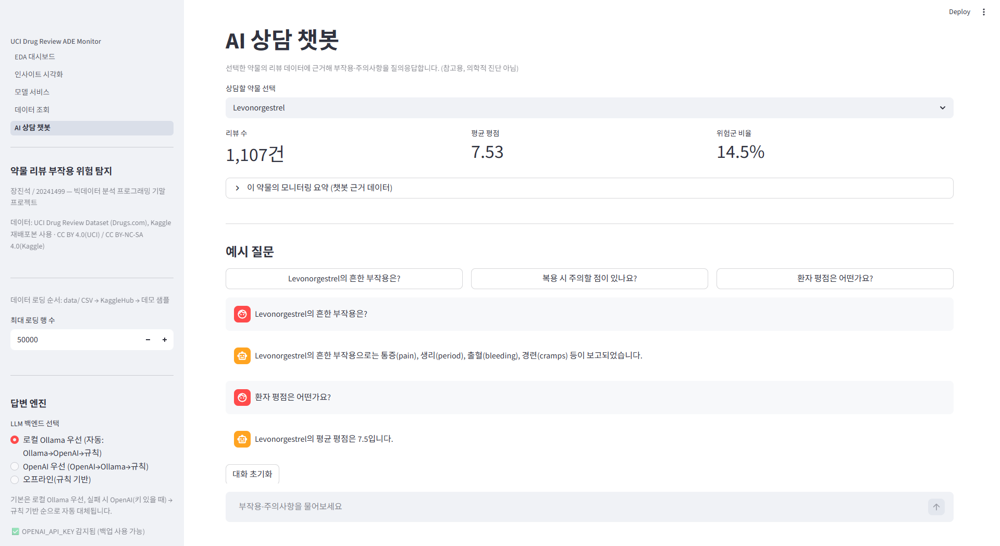

← → 넘김 · F11 전체화면 · N 발표자노트
PROBLEM & DATA
문제정의 & 데이터
- 문제 리뷰·평점으로 심각한 부작용(ADE) 위험 신호 조기 탐지 (먹기 전·후 참고)
- 데이터 UCI Drug Review (Kaggle) · 215,063행 × 7열 · CSV
- target 위험군/안전군 이진 분류 (18.6%) — 정답 없어 약한 라벨링
라이선스: UCI CC BY 4.0 / Kaggle CC BY-NC-SA 4.0 → 엄격한 쪽 준수, 출처만 명시

위험군 18.6% — 안전군이 다수인 불균형 데이터
EDA & INSIGHT
EDA · 시각화 발견

평점은 J자형 (10·1점 양극단)
→ 위험군 평점 중앙값 2 vs 안전군 9 — "낮은 평점 = 불만 신호"
→ 위험군 평점 중앙값 2 vs 안전군 9 — "낮은 평점 = 불만 신호"

상관 히트맵 — 누수 단서
→ severe 키워드 ↔ 라벨 0.64. 라벨을 그 키워드로 만들어서(=정답 베끼기) → 학습에서 제외 (→슬5)
→ severe 키워드 ↔ 라벨 0.64. 라벨을 그 키워드로 만들어서(=정답 베끼기) → 학습에서 제외 (→슬5)
그 외: 약물 3,671종 (약물별 IQR 기준 필요) ·
condition HTML 잔여물 → 전처리LIVE DEMO ★
▶ 라이브 데모 — 실제 앱으로 전환
① 모델 서비스 — 약물
Sertraline · 증상 chest pain… could not breathe · 평점 2▼
위험도 ~75% · 심각한 부작용 위험군
※ 위험군 = '확정'이 아니라 주의 깊게 볼 리뷰를 골라낸 선별 신호
- 약물별 IQR 이상치 판정 + 과거 유사 리뷰 + 상담 리포트
② AI 챗봇 — 약물 선택 → 그 약물 리뷰 근거(grounding)로 부작용 질의응답

① 예측 결과 화면

② 약물 근거 LLM 챗봇 — 시연 실패 시 이 두 캡처가 백업
발표자 노트
1 / 6